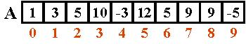

Objetivos:
- Que reafirmes los conocimientos sobre arreglos en el desarrollo
de programas que implican manipular arreglos mediante el uso de ciclos
- Que refuerces las habilidades de sociabilización mediante
el proceso de trabajo en equipo
- Que ayudes a tus compañeros a encontrar la mejor solución
a los programas

Forma de
trabajo:
Actividad en equipos colaborativos e individual

Tiempo estimado:
90 minutos

Instrucciones:
- Intégrate con tu equipo colaborativo y sigue las indicaciones
del profesor.
- Junto con tus compañeros de equipo, analiza cada uno de
los ejercicios que se presentan a continuación. Identifiquen, en
equipo, cual sería el algoritmo para la solución de cada uno
de los ejercicios. Recuerden documentarlos en sus hojas membretadas.
- De manera individual escribe un programa en C para cada uno de
los ejercicios. Recuerda basarte en el algoritmo que se generó en
el equipo.
- Una vez que hayas terminado tu programa, es tu responsabilidad
ayudar a tus compañeros de equipo a que terminen su programa.
- Entrega, vía la plataforma, los archivos *.c que
contengan los programas en C.
- Utiliza el siguiente esquema como apoyo para desarrollar tu laboratorio:

Ejercicios:
1. El procedimiento inicializaVector,
que recibe un vector de 10 valores enteros y un valor entero x. El procedimiento
deberá llenar cada localidad del vector con el valor de x.
Ejemplo:
inicializaVector
( vector, x );
Suponiendo que x = 5

2. Implementa el procedimiento capturaVector, que recibe un vector de 10 valores
enteros. El procedimiento deberá pedir un valor entero al usuario
y lo almacenará en la localidad correspondiente del vector; se pedirá
un valor 10 veces (hasta llenar el vector).
Ejemplo:
captura_Vector(vector);
Da un
valor: 2
Da un
valor: 4
Da un
valor: 76
Da un
valor: -5
Da un
valor: -6
Da un
valor: 68
Da un
valor: 21
Da un
valor: 42
Da un
valor: 36
Da un
valor: 5
Al terminar el procedimiento
el vector tendrá almacenados todos los números introducidos
por el usuario en ese mismo orden.
3. Implementa el
procedimiento imprimeVector, que recibe
un vector de 10 valores enteros. El procedimiento deberá desplegar
en pantalla el contenido del vector.
4. Implementa la función sumaImpares, que recibe un vector de 10 valores
enteros. La función regresa la suma de todos los elementos impares
del vector.
Ejemplo:
Suponiendo
que el vector tiene asignados los siguientes valores:

El resultado
de la función sería: 24
5. Implementa el procedimiento sustituyeVector, que recibe tres parámetros,
un vector de 10 valores enteros y un valor entero X y un valor Y.
El procedimiento debe sustituir las ocurrencias de X en el vector
por el valor de Y.
Ejemplo:
sustituyeVector(vector,
x, y);
Suponiendo que
x = 3 , y = 7

6. Implementa el procedimiento modificaVector, que recibe dos parámetros,
un vector de 10 valores enteros y un valor entero X. El procedimiento
debe de multiplicar cada localidad del arreglo por X y el resultado
de la multiplicación asignarla a su respectiva casilla.
Ejemplo:
Suponiendo
que el vector original tiene asignados los siguientes valores:

Al aplicar el
procedimiento modificaVector(vector,2) el vector quedaría
con los siguientes valores:

7. Implementa la
función mayorVector que recibe
un vector de 10 valores enteros. La función deberá regresar
el elemento de mayor valor contenido en el arreglo.
8. Implementa el
procedimiento menu, que despliegue el siguiente menú en pantalla:

Forma de
entrega:
- Envía tu laboratorio por blackboard, no se aceptarán
laboratorios por ningún otro medio.
- Envía solo tus archivos *.c.
- Los laboratorios enviados posteriormente a la fecha límite
NO SERÁN CALIFICADOS.
.
INSTRUCCIONES PARA ENVIAR TU LABORATORIO
POR BLACKBOARD
- Haz clic en la actividad de Entrega de Laboratorio.
- Escribe comentarios si lo consideras necesario.
- Da clic en el botón de Browse My Computer y localiza
el archivo *.c. Si necesitas agregar más archivos repite
este proceso hasta agregar todos tus archivos.
- Haz clic en Submit.
- Al indicar que ha subido exitosamente hacer clic en OK.
. |